2 Instalando o R
Nesse capítulo, iremos aprender como baixar e instalar o R para Windows1! Optamos por dividir o passo a passo em 7 etapas – mas fique tranquilo, não são passos grandes, apenas fizemos dessa forma para que o conteúdo fique bem mastigado, fácil de entender.
Antes de começar, vamos entender alguns conceitos. A ideia aqui é te ensinar o que significam algumas nomenclaturas e siglas que aparecem ao longo do processo de instalação, em especial R Foundation e CRAN. Essa parte é totalmente opcional e você pode pular direto para o passo a passo caso esteja sem tempo – ou até mesmo interesse.
R Foundation: é uma empresa sem fins lucrativos, criada pelos principais desenvolvedores da linguagem. Quais são seus objetivos? Basicamente três: (i) administrar os direitos autorais da linguagem – e, por consequência, manter seu uso como livre; (ii) apoiar o desenvolvimento do R como um todo, isto é, fornecer informações e criar novos usos básicos, elaborar conferências, guias, entre outros; (iii) servir como ponto focal para todos os usuários da linguagem que desejem interagir com a comunidade de desenvolvedores. De forma resumida, a R Foundation é como se fosse a instituição provedora do básico da linguagem, que busca sempre atualizar e mantê-lo de pé. Se você instala o R e, logo em seguida, percebe que alguma de suas atribuições não está em perfeito funcionamento, provavelmente terá que comunicar à essas pessoas. Grosso modo, exerce um papel próximo ao da Microsoft com o Excel, por exemplo. Uma observação (importante): como o R é um software livre, qualquer pessoa pode desenvolver novas funções ou recursos a partir da linguagem. Por esse motivo, para recursos que estejam além da base do R, você deve recorrer à quem os criou! Por exemplo, com relação ao RStudio (que conheceremos mais à frente), devemos nos reportar à empresa Posit, sua desenvolvedora. Na prática, raramente (para não dizer nunca) iremos reportar alguma coisa à R Foundation, mas sim aos desenvolvedores daquele pacote/extensão específico (fique tranquilo, explicaremos mais à frente o conceito de pacote para a linguagem).
CRAN (Comprehensive R Archive Network): segundo o própio, é “uma coleção de sites que carrega material idêntico, consistindo nas distribuições do R, extensões contriubídas, documentação e arquivos binários de R”. ‘Meu Deus, o que isso significa?’ Simples: apenas uma coleção de endereços da internet em que podemos baixar a versão mais recente do R, assim como pacotes. Quem mantém o CRAN? Instituições voluntárias; em seus sites, a parte onde é possível baixar arquivos relacionados ao R é chamada de mirror. E com quais recursos o CRAN se mantém? Com os da própria instituição participante (principalmente em termos de colaboradores) e, também, da R Foundation!
Essa história toda para dizer: o arquivo básico que iremos baixar para instalar o R será obtido através de algum mirror do CRAN, isto é, a parte do site de alguma instituição voluntária em colaboração com a R Foundation.
2.1 Sete passos
O primeiro passo consiste em escolher um repositório (mirror) para baixar o R. No endereço https://cran.r-project.org/mirrors.html encontramos todas as opções disponíveis, por país e em ordem alfabética. No seu computador, deverá aparecer a seguinte tela:
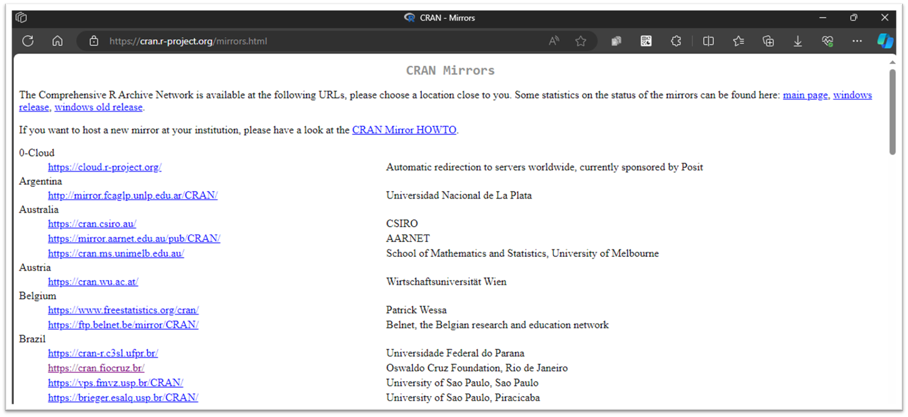
Por questões de rapidez/latência, o ideal é escolher o repositório mais próximo de você. Considerando que todos estejam no Rio de Janeiro, vamos então utilizar o mirror da Fiocruz.
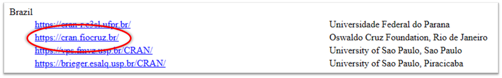
Como essa apostila foca na instalação para sistemas operacionais do tipo Windows, vamos clicar então em Download R for Windows, na parte superior da página.
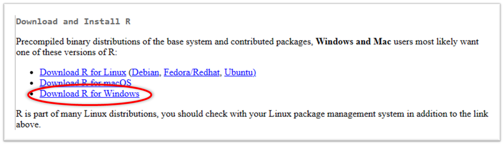
Na página seguinte, clique em ‘base’. Grosso modo, como o nome já indica, iremos baixar os aquivos base do R – ou seja, o mínimo necessário que você precisará para poder executar algum código.
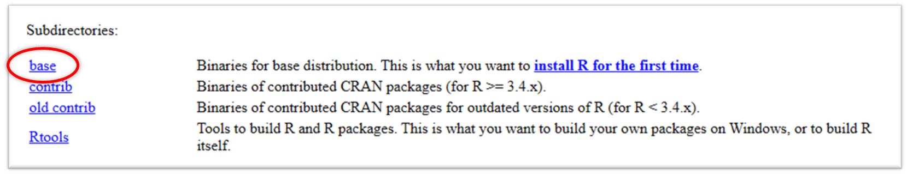
Na nova página, clique em ‘Download R x.x.x for Windows’, sendo ‘x.x.x’ o número da versão que será baixada. No momento da elaboração deste tutorial, a versão mais recente do R é a 4.3.3.
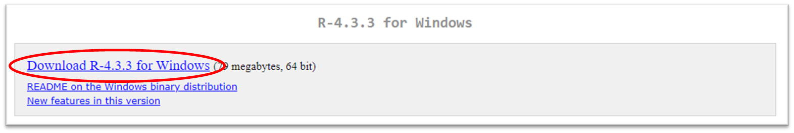
Se você tiver algum problema com o download, tente escolher outro servidor no passo 2 – por exemplo, um dos servidores da Universidade de São Paulo.
Abaixo, os passos 1-5 para realizar o donwload.
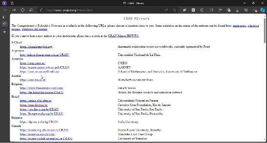
Você receberá um aviso, que varia conforme o navegador em uso, de que o arquivo está sendo baixado. Abaixo, um exemplo no Microsoft Edge:
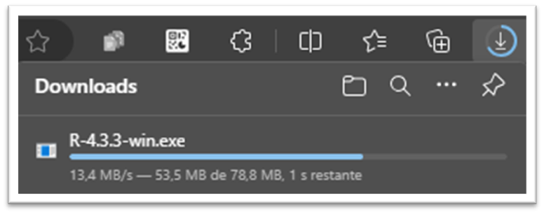
No Windows, o arquivo será armazenado na pasta ‘Downloads’ do seu computador (ou na pasta que você previamente configurou como destino para os arquivos baixados).
Feito o download, clique duas vezes no arquivo baixado e siga as instruções para instalação. Na prática, basta clicar em ‘Avançar’ até o fim.
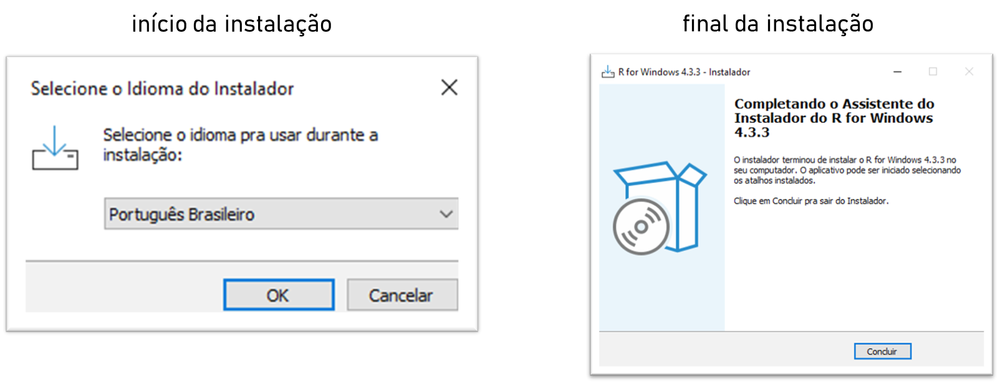
Após o final da instalação, você deverá ser capaz de encontrar e abrir no seu computador o R Graphical User Interface ou, como popularmente é conhecido, RGui. Ele estará na pasta em que você destinou para instalação; no Windows, algo próximo de:
C:\ProgramData\Microsoft\Windows\Start Menu\Programs\R
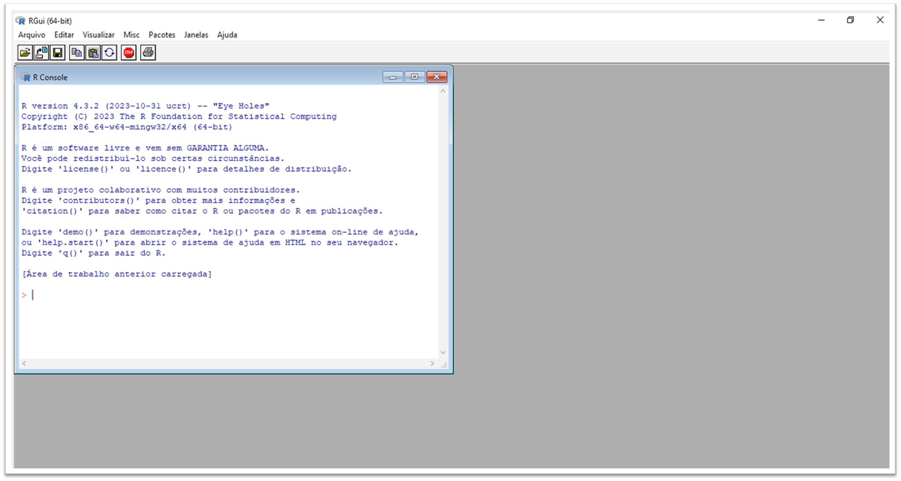
2.2 Conhecendo o RGui
De forma geral, um GUI permite com que o usuário utilize a linguagem de forma interativa através de botões e dispositivos visuais. Observe que, na parte superior, temos oito botões principais, representados por pequenas imagens.
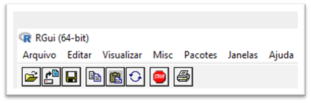
Cada botão executa uma tarefa específica. Os três primeiros, da esquerda para direita, são os mais relevantes:
‘Abrir script’: permite com que você carregue, no Editor de Código, um arquivo que contém linhas de código (script). Arquivos desse tipo, cuja extensão é
.R, serão os mais importantes da linguagem.‘Carregar área de trabalho’: importa objetos que foram salvos anteriormente em um arquivo do tipo
.RData.‘Salvar área de trabalho’: salva objetos criados em um arquivo do tipo
.RData.
Os botões restantes, em ordem, executam as seguintes tarefas: ‘Copiar’, ‘Colar’, ‘Copiar e colar’, ‘Parar computação atual’ e ‘Imprimir’. Nesse momento, não se preocupe em saber o que significa importar ou o que é um arquivo do tipo .RData.
Por outro lado, vamos procurar entender melhor o que são o Console e o Editor de Código. O primeiro corresponde à janela de nome R Console, no canto esquerdo da sua tela. Este último, por sua vez, não abre instantâneamente no momento em que você acessa o RGui, mas podemos abrí-lo manualmente através de ‘Arquivo’ > ‘Novo script’ – ou, então, carregando um script já existente através do botão ‘Abrir script’, que vimos anteriormente. Posicionando o Editor de Código ao lado do Console, teremos a seguinte imagem:
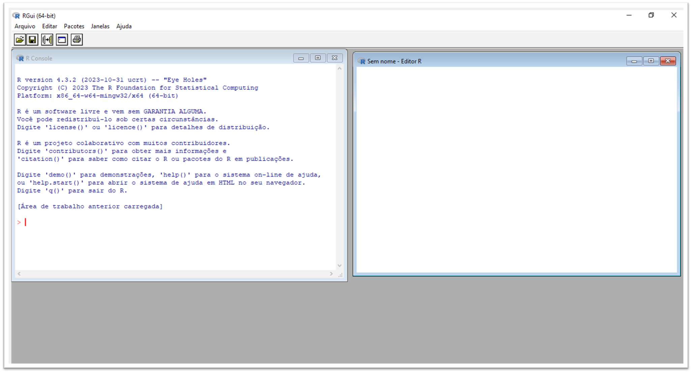
Por quê esses espaços terão relevância para nós?
O Editor de Código é o local em que você escreve os comandos que deseja executar no R, além de comentários que busquem registrar o porquê de você ter escrito determinada parte do seu código. Na prática, um comentário é uma linha que não será interpretada – e consequentemente executada – como parte da linguagem. Para registrar um comentário, basta escrever o símbolo ‘#’ antes do que você deseja escrever naquela linha2. Um ponto importante: o Editor permite com que salvemos o script que criamos em um arquivo do tipo
.R. Lembre-se: esse é o principal tipo de arquivo da linguagem.O Console, por sua vez, é o local em que a parte interpretável de código em R (ou seja, tudo exceto comentários) será efetivamente executada e os respectivos resultados serão mostrados. É aqui que a mágica efetivamente ocorre! Você também pode executar partes do seu código diretamente no Console, porém os comandos não ficam salvos, são apenas temporários.
Simplificando: o Editor é o espaço em que você realmente escreverá os códigos em R. Ele atua como rascunho do seu script, permitindo com que você posteriormente salve o que foi escrito e, consequentemente, volte a executar o mesmo código. Já o Console é o espaço em que o código é processado, retornando com o resultado dos comandos que você escreveu.
Entretanto, não iremos utilizá-los através do RGui. No capítulo seguinte, instalaremos e conheceremos um pouco mais sobre outro ambiente, bem mais completo, para se programar em R. “Meu Deus, aprendi todos esses conceitos à toa?”, você deve estar se perguntando. Não! Muito do que aprendemos nessa seção voltará a aparecer no capítulo seguinte.
Beleza, não tocaremos no RGui. Mas é interessante compreender que já é possível executar – ou rodar, no jargão de programação – algum pedaço de código – ou chunk – escrito em R. Para isso, basta escrevê-lo após o símbolo de ‘maior que’ (>) no Console.
Vamos entender com um rápido exemplo. No GIF abaixo, atribuimos à variável de nome x o valor númerico 2. Em seguida, escrevemos o nome novamente para retornar seu valor. Fique tranquilo: ainda iremos ver melhor o que significam termos como atribuir um valor à determinada variável. O objetivo deste box foi apenas te mostrar que já estamos aptos a programar em R!
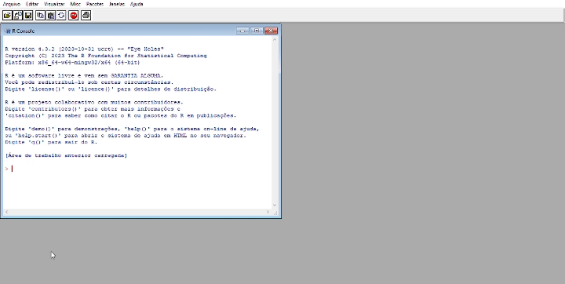
Você pode realizar procedimento equivalente para sistemas operacionais Linux, apenas alterando a opção de download quando necessário – isto é, selecionando as opções em que esteja escrito ‘Linux’, ao invés de ‘Windows’.↩︎
Note que, se o seu comentário for longo demais, de tal forma que você queira quebrá-lo em duas ou mais linhas, será necessário novamente escrever ‘#’ na próxima linha↩︎